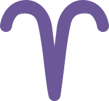
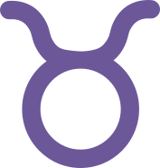
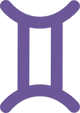
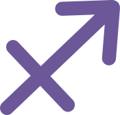
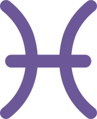

Ontdek alle 12 sterrenbeelden plus het controversiële 13e teken Ophiuchus. Leer wat elk teken betekent, hoe planeten zich anders uitdrukken in elk teken, en wat het betekent om planeten in specifieke huizen te hebben.
De dierenriem is een hemelzone die zich ongeveer 8 graden aan weerszijden van de ecliptica uitstrekt, het schijnbare pad dat de Zon over de loop van een jaar aan de hemel aflegt. Deze zone is verdeeld in 12 segmenten van elk 30 graden, en elk segment is genoemd naar een sterrenbeeld. Dit zijn de sterrenbeelden.
In de astrologie wordt uw Zonneteken bepaald door welk segment van de dierenriem de Zon bezette op het moment van uw geboorte. Maar uw complete geboortehoroscoop plaatst alle planeten, de Maan en andere belangrijke punten in de dierenriem, waardoor u plaatsingen in meerdere tekens krijgt. U bent niet alleen uw Zonneteken. U bent een complete horoscoop.
Elk teken heeft een heersende planeet, een element (Vuur, Aarde, Lucht, Water), een kwaliteit (Kardinaal, Vast, Veranderlijk), en een polariteit (Yin of Yang). Deze eigenschappen vormen hoe het teken zijn energie uitdrukt.
Belangrijk Inzicht
U bent niet alleen uw Zonneteken. U bent een complete horoscoop. Uw volledige geboortehoroscoop plaatst alle planeten, de Maan en andere belangrijke punten verspreid over de dierenriem, waardoor u plaatsingen in meerdere tekens krijgt die samen een compleet beeld schetsen van wie u bent.

21 maart - 19 april
Vuur
20 april - 20 mei
Aarde
21 mei - 20 juni
Lucht21 juni - 22 juli
Water23 juli - 22 augustus
Vuur23 augustus - 22 september
Aarde23 september - 22 oktober
Lucht23 oktober - 21 november
Water
22 november - 21 december
Vuur22 december - 19 januari
Aarde20 januari - 18 februari
Lucht
19 februari - 20 maart
WaterBelangrijk Inzicht
Elk sterrenbeeld beheerst een lichaamsdeel, waardoor een kaart ontstaat van hoofd (Ram) tot voeten (Vissen). Deze oude correspondentie verbindt hemelse patronen met fysieke ervaring, wat de holistische visie van de astrologie weergeeft dat de macrokosmos gespiegeld wordt in de microkosmos.
Element: Vuur | Kwaliteit: Kardinaal | Heerser: Mars
Ram is het eerste teken van de dierenriem en draagt de energie van initiatief, moed en directe actie. Ramenergie is competitief, onafhankelijk en impulsief. Het wil de eerste zijn, leiden en pionieren. Op zijn best is Ram moedig, eerlijk en energiek. Op zijn meest uitdagende kan het ongeduldig, agressief en egoïstisch zijn. Ram beheerst het hoofd en gezicht.
Element: Aarde | Kwaliteit: Vast | Heerser: Venus
Stier is het teken van stabiliteit, sensualiteit en materieel comfort. Stierenergie is geduldig, betrouwbaar en diep verbonden met de fysieke wereld: voedsel, aanraking, natuur, geld, schoonheid. Het waardeert veiligheid boven bijna alles en kan buitengewoon volhardend zijn. Op zijn meest uitdagende wordt Stier koppig, bezitterig en veranderingsresistent. Stier beheerst de keel en nek.
Element: Lucht | Kwaliteit: Veranderlijk | Heerser: Mercurius
Tweelingen is het teken van communicatie, nieuwsgierigheid en mentale behendigheid. Tweelingsenergie wil alles leren, met iedereen praten en meerdere interesses tegelijk jongleren. Het is aanpasbaar, geestig en sociaal veelzijdig. Op zijn meest uitdagende kan Tweelingen oppervlakkig, inconsistent en verstrooid zijn. Tweelingen beheerst de handen, armen en longen.
Element: Water | Kwaliteit: Kardinaal | Heerser: Maan
Kreeft is het teken van verzorging, emotionele diepte en thuis. Kreeftenergie is beschermend, intuïtief en diep gehecht aan familie en het verleden. Het creëert veiligheid voor degenen die het liefheeft en heeft een krachtig emotioneel geheugen. Op zijn meest uitdagende kan Kreeft humeurig, klammerig en manipulatief door schuldgevoel zijn. Kreeft beheerst de borst, borsten en maag.
Element: Vuur | Kwaliteit: Vast | Heerser: Zon
Leeuw is het teken van creativiteit, zelfexpressie en persoonlijke aantrekkingskracht. Leeuwenergie is warm, genereus, dramatisch en wil gezien en gewaardeerd worden. Het heeft natuurlijke leidinggevende kwaliteiten en een oprechte wens om anderen vreugde te brengen. Op zijn meest uitdagende kan Leeuw egocentrisch, aandachtszoekend en trots zijn. Leeuw beheerst het hart en de bovenrug.
Element: Aarde | Kwaliteit: Veranderlijk | Heerser: Mercurius
Maagd is het teken van analyse, dienstverlening en praktische verbetering. Maagdenergie is nauwgezet, gezondheidsbewust en gedreven om dingen beter te laten werken. Het merkt op wat anderen missen en vindt doel in nuttig zijn. Op zijn meest uitdagende kan Maagd overdreven kritisch, angstig en perfectionistisch tot het punt van verlamming zijn. Maagd beheerst het spijsverteringssysteem en darmen.
Element: Lucht | Kwaliteit: Kardinaal | Heerser: Venus
Weegschaal is het teken van balans, partnerschap en esthetische harmonie. Weegschaalenergie zoekt eerlijkheid, schoonheid en betekenisvolle één-op-één verbinding. Het